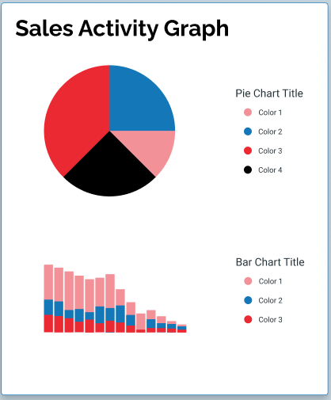

Followup List
As of {{date.toDateString()}}
| Name | {{client.name}} | ID | {{client.id}} | Status | {{client.status}} |
|---|
As of {{date.toDateString()}}
| Name | {{client.name}} | ID | {{client.id}} | Status | {{client.status}} |
|---|